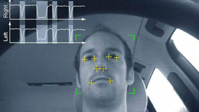

To be an innovator in vast commenced field of Artificial Intelligence integrated with CyberSec where the deep
Learning priciples be the approach to tackle the statistical challenges.
As to best describe me, I always keep this saying in mind that: DREAMS WITHOUT GOALS ARE JUST A DREAM ! To be an innovator in the vast commenced field of Artificial Intelligence where its' Preliminary Principles can be incubated with CyberSecurity alarming emergence. As AI/ML is the approach that can re-define Techno-driven Intelligence for most of the Monetary-eccentric Products
where Automating any Task with endless working efficiency of Machine would drive the Human Resources to an enormous extends. AI/ML applications are getting populated with Deep Learning and Natural Language Processing enlighten scope where encapsulating the machine productivity
has become the Fundamental Principle . To opt for the Passion that can best describe me, was to amend the AI principles utilisation for highly encentric domain, where first aggregated approach needs to fulfill the stipulation for Cyber Security products where the security fabrics
more effictively be annexed.
The thrist for onboarding with AI-driven approaches was to first Practice out on, What AI/ML kind of stuff is ? Then other burning thought was about how CyberSec can be enchanced (moreover its Practice other than theory)! By investing my entire 2 years of undergraduation on Learning and exploring the vast
growth of AI/ML and CNN projects and how people with different mindset or more professionally, THINKING, made this imagination to a true scorable bounds. The lurk of CyberSec AI arouse the Deep impact on how differently Security Fabrics can be enhanced, thinking wasn't arised by sitting backdoors but more profoundly when I heard about
Crypto-Currency products making their shift to AI/ML grounds to make Mining procedure more confluencing and machine-driven other than depending on Human-liability, this made me really think on 3 perspectives..... Why, When, and How ??? and What impact would leashed out !
Failing multiple times on managing how to make imagination a True scope of enactment, as only scope thats' best to drake is keep practicing and focusing on what I thought to Achieve and Develop for CyberSec resources enrichment when I emphasised on this best spokens' : WE NEVER PLAN TO FAIL, BUT FAIL TO PLAN !
Project Work
The practice of leading the work of a team to achieve goals and meet success criteria at the specified time. The primary challenge of project management is to achieve all of the project goals within the given constraints. This information is usually described in project documentation, created at the beginning of the development process. The primary constraints are scope, time and quality. A project is a temporary endeavor designed to produce a unique product, service or result with a defined beginning and ends with usually time-constrained, and often undertaken to meet unique goals and objectives, typically to bring about beneficial change or added value.
Human Identification using Detection and Recognition from Real Time video
Motion can be described either by a 2-D motion model or 3-D motion model. The two dimensional motion estimation is an important part of our video stabilization system. The motion estimation is the foundation/ pre-requisite for video stabilisation. So working with the direct pixel approach will help in making the optimal use of the frame information available.
Initially, the practical approach was to use sparse optical flow (Shi tomasi) which is concerned with computing the motion of pixels between consecutive image frames. Usually uses image features such as edges, corners, etc. However, Dense Optical Flow using Gunner Farneback's algorithm computes the optical flow for all the points in the frame.
Activity Recognizer for Drowsiness using the Decisive Learning

Driver fatigue is a huge traffic safety problem and is widely believed to be one of the largest contributors to fatalities and severe injuries in traffic today, either as a direct cause of falling asleep at the wheel or as a contributing factor in lowering the attention and reaction time of a driver in critical situations. Accidents with commercial heavy vehicles are not only dangerous but also very costly and the counteraction of driver fatigue is highly important for improvement of road safety.
A typical program for handling fatigue related risks is designed in several steps, applied in different phases and involves different levels of the organisation. In what way an organisation choose to define a FRM program depend on the targeted group of people the program is developed for.
Face Identification and Gesture Recognition for Bio-informatic Applications
Face recognition is quite simple and intuitive. You look at a person’s face, eyes, nose, mouth, color and overall look. This is your mind learning or training for the face recognition of that person by gathering face data.
The first is the introduction of a new image representation called the “Integral Image” which allows the features used by our detector to be computed very quickly. The second is a learning algorithm, based on AdaBoost, which selects a small number of critical visual features from a larger set and yields extremely efficient classifiers. LBP features are extracted to form a feature vector to classify a face from a non-face because face is composed of micro texture patterns and LBP is a texture descriptor.
Towards Unsupervised Text Classification Leveraging Experts and Word Embeddings
Supervised machine learning models have shown great success in this area but they require a large number of labeled documents to reach adequate accuracy. With the help of TF-IDF (unsupervised learning) we can see how important a word is to a document in a collection or corpus. We then make use of the TF-IDF matrix to calculate document similarity by making use of scikit-learn.
Our approach for unsupervised text classification is based on the choice to model the task as a text similarity problem between two sets of words: One containing the most relevant words in the document and another containing keywords derived from the label of the target category. While the key advantage of this approach is its simplicity, its success hinges on the good definition of a dictionary of words for each category.
Image captioning is somewhat interesting to study with machine learning perspectives because it concerns what we understood about the perception with respect to the machine learning activities. Image Captioning research has been around for a number of years, but the efficacy of the techniques were limited, and they generally weren’t robust enough to handle the real world.
To overscale the use of Recurrent Neural Network and LSTM to make the perceptrons map with the neighbourhood using the feed forward learning, the output of which is to minimize the fatal error by using the stored memory of LSTM gates in the back forward propagation step.
Research is "creative and systematic work undertaken to increase the stock of knowledge, including knowledge of humans, technology and its best practiced applications, and the use of this stock of knowledge to devise new applications. Research is important for three reasons.1. Research adds to our knowledge: Adding to knowledge means that educators undertake research to contribute to existing information about issues 2.Research improves practice: Research is also important because it suggests improvements for practice.
A research project may also be an expansion on past work in the field. Research projects can be used to develop further knowledge on a topic, or in the example of a school research project, they can be used to further a student's research prowess to prepare them for future jobs or reports. The degree of originality of the research is among major criteria for articles to be published in academic journals and usually established by means of peer review.
Stock Capitalization Prediction With Twitter Comment Using NLP And Machine Learning
The proliferation of machine learning has been unprecedented. There exists very few domains where data-based decision making is required that hasn’t seen its widespread application. The field of investing is no exception. One simply has to search Google jointly for “ML” and “stock prediction” to be presented with a plethora of time series forecasting and Recurrent Neural Network related content. One commonly used technique in both (investment) literature and practice to combat these abnormalities in time series data is to take the price return for stocks (or rate of change for other data), between two periods instead of the absolute value.
As the proposed algo is designed on low accuracy principles. The point to work on the project is to reframe the project with the research taken forward using NLP and Machine Learning (using Tensor-flow/Chainer(begginner)/Pytorch lib) and to increase the accuracy with learning Efficiency.
The product inhibit the Security of server Infra’ by injecting ciphers for phishing and bypassing the security spectrum by using the fundamentals of Stenography in its root practice(haskel) based on the principle modules of Sec Tools penetrating - project titled as Code 9 Newspaper Article !
The roots for the prototype are deep stretched to the Research Analysis, where the back-end support written in python3.x integrated with c++ core is to be utilised as a tool to globe the spectrum for Stenography principle security testing, main objective was to be on-hands with Stenographical knowledge and to practice scripting where AI + CyberSec can highly utilized. The Project is 29/100 online
To get best in touch if any Research related or AI CyberSec kinda project or prototype is to be published or worked upon, as to neutralise the exempts of coding languages I practice Python (high efficiency) and C++ (memory and Object utilization) with major objectives to focus on. As being Undergrad passed out of NIIT, look forward to contribute in un-commenced or I'M Possible kind of Research Work !
Raise Query below, If I can be helpful anyhow ....